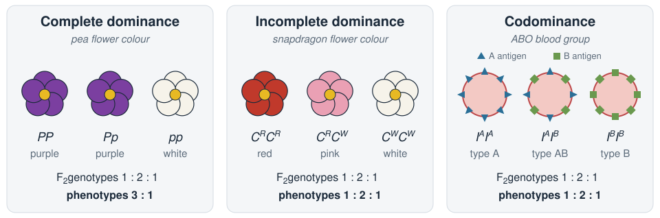
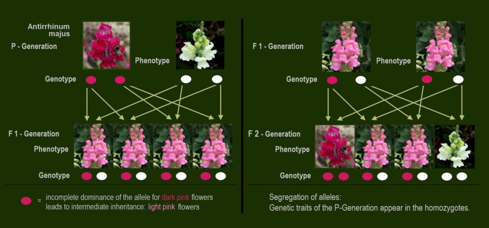
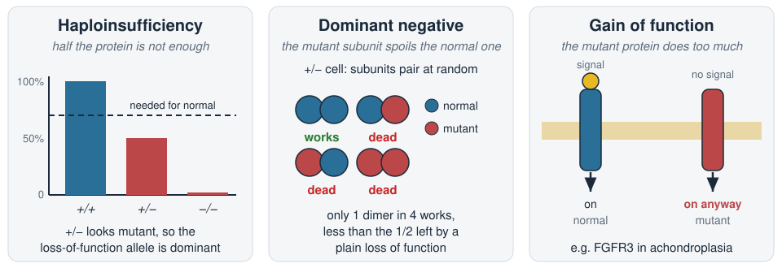
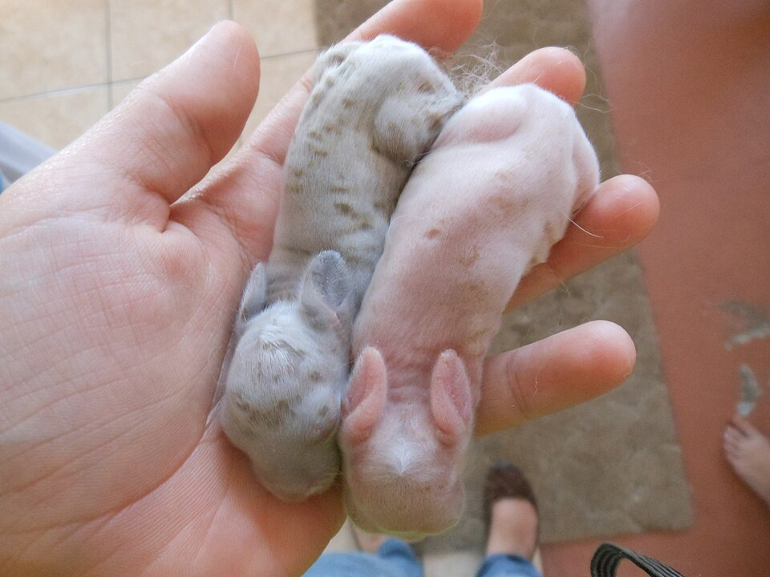
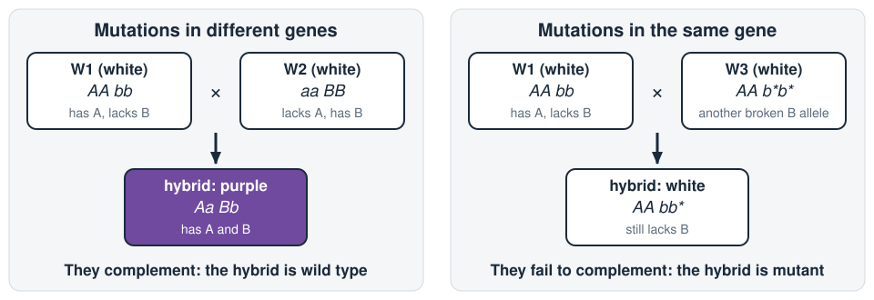
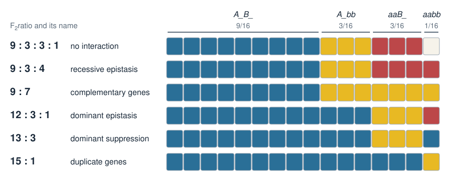

Extensions to Mendel
Dominance, multiple alleles, lethal alleles, penetrance and epistasis
About this lecture
Mendel picked traits that behave simply: one gene, two alleles, one fully dominant, no interactions, no environment. Most traits are not that tidy. Today we keep Mendel’s two laws (segregation and independent assortment) and change the assumptions about how genotype becomes phenotype.
Part A, one gene:
- incomplete dominance and codominance; why an allele is dominant at the molecular level;
- multiple alleles and allelic series; lethal alleles and pleiotropy;
- penetrance, expressivity and the environment, with a risk calculation.
Part B, two genes:
- genes in one pathway turn 9 : 3 : 3 : 1 into 9 : 3 : 4, 9 : 7, 12 : 3 : 1, 13 : 3 or 15 : 1: the same 16ths, merged;
- the complementation logic behind 9 : 7;
- a strategy: counts → 16ths → candidate ratios → χ² (from Probability and the χ² test) → pathway.
Book: Hartwell, the chapter on extensions to Mendel’s laws.
Dominance is a relation between two alleles

- Complete dominance: the heterozygote looks like one homozygote (Pp is purple). F₂ phenotypes 3 : 1.
- Incomplete dominance: the heterozygote is in between.
- Codominance: the heterozygote shows both phenotypes in full.
“Dominant” describes a pair of alleles for one phenotype, not one allele on its own, and not how common it is.
Incomplete dominance, step by step

Image: Jacek Halicki, I am Jim, Crochet.david and Sciencia58, CC BY-SA 4.0, via Wikimedia Commons
| Generation | Cross | Genotypes | Phenotypes |
|---|---|---|---|
| P | red CRCR × white CWCW | ||
| F₁ | all CRCW | all pink | |
| F₂ | CRCW × CRCW | 1 CRCR : 2 CRCW : 1 CWCW | 1 red : 2 pink : 1 white |
Each genotype has its own phenotype, so the phenotype ratio is the genotype ratio.
Codominance: both products show
The heterozygote makes both allele products, and we can see both.
- ABO blood groups: IAIB red cells carry both the A and the B antigen. Blood type AB is not “halfway between” A and B; it is A and B.
- Haemoglobin on a gel (recap from Genetics as information): an HbA/HbS carrier has two bands, HbA and HbS.
| incomplete dominance | codominance | |
|---|---|---|
| heterozygote | intermediate (pink) | shows both (AB) |
| F₂ phenotype ratio | 1 : 2 : 1 | 1 : 2 : 1 |
| how we see it | amount of one product | two distinct products |
Whether we call alleles codominant often depends on how closely we look: at the protein level, most pairs of alleles are codominant.
Why is an allele dominant? The molecular view

- Most loss-of-function alleles are recessive: half the normal protein is usually enough (haplosufficient).
- Haploinsufficiency: half is not enough, so a loss-of-function allele is dominant (e.g. PAX6 and aniridia).
- Dominant negative: the mutant protein spoils the normal one in a complex (e.g. mutant collagen chains in osteogenesis imperfecta).
- Gain of function: the mutant protein does something new or too much (e.g. an over-active FGFR3 receptor in achondroplasia).
Dominant negative: the numbers
A heterozygote makes normal (N) and mutant (M) subunits in equal amounts, and they assemble at random. A complex works only if every subunit is normal.
| Protein made of | P(all subunits normal) | Working protein, dominant negative | Working protein, plain null allele |
|---|---|---|---|
| 1 subunit (monomer) | ½ | ½ | ½ |
| 2 subunits (dimer) | ½ × ½ | ¼ | ½ |
| 4 subunits (tetramer) | (½)⁴ | 1/16 | ½ |
- A null allele makes no protein: the cell has half the normal amount, all of it working.
- A dominant-negative allele makes protein that poisons the complexes it joins. The more subunits per complex, the worse it gets.
- So a mutation that destroys a protein can be less harmful in a heterozygote than one that makes a faulty protein.
Multiple alleles: ABO
A population can carry many alleles of one gene, even though each diploid person carries at most two.
ABO blood groups (gene ABO, which encodes a glycosyltransferase):
| Genotype | IAIA, IAi | IBIB, IBi | IAIB | ii |
|---|---|---|---|---|
| Blood type | A | B | AB | O |
IA and IB are codominant with each other; both are dominant over i (no working enzyme). Three alleles give 6 genotypes but 4 phenotypes. With n alleles there are n(n + 1)/2 genotypes.
Worked example. IAIB (type AB) × IAi (type A):
| ½ IA | ½ i | |
|---|---|---|
| ½ IA | IAIA (A) | IAi (A) |
| ½ IB | IAIB (AB) | IBi (B) |
Children: ½ A : ¼ AB : ¼ B, and no O: every child gets IA or IB from the AB parent.
An allelic series
Rabbit coat colour, one gene with four alleles in a dominance hierarchy:
C \;(\text{full colour}) \;>\; c^{ch} \;(\text{chinchilla}) \;>\; c^{h} \;(\text{Himalayan}) \;>\; c \;(\text{albino})
Each allele is dominant over those to its right. Four alleles: 4 × 5/2 = 10 genotypes, but only 4 phenotypes.
Worked example. Cch (full colour) × cchc (chinchilla):
| ½ cch | ½ c | |
|---|---|---|
| ½ C | Ccch: full colour | Cc: full colour |
| ½ ch | cchch: chinchilla | chc: Himalayan |
Offspring: ½ full colour : ¼ chinchilla : ¼ Himalayan. Read each cell by asking: which of the two alleles is further left in the series?
Working backwards: an offspring class tells you which alleles the parents must carry. Here, a Himalayan offspring proves that the chinchilla parent carries an allele below ch.
Lethal alleles: the yellow mouse

- Cuénot (1905): yellow × yellow mice gave yellow and agouti offspring near 2 : 1, never 3 : 1. Yellow mice never bred true.
- Step by step: AYa × AYa → 1 AYAY : 2 AYa : 1 aa. The AYAY quarter dies as embryos. Among survivors: 2 yellow : 1 agouti, so ⅔ yellow.
- A 2 : 1 ratio among the survivors of a monohybrid cross is the signature of a recessive lethal.
Testing the lethal hypothesis; pleiotropy
A good hypothesis makes new predictions. If AYAY is lethal:
| Prediction | Why |
|---|---|
| Every yellow mouse is AYa | the homozygote never survives |
| Yellow × agouti gives 1 yellow : 1 agouti, no deaths | AYa × aa cannot make AYAY |
| Yellow × yellow litters are about ¼ smaller | a quarter of the embryos die early |
| Dissected yellow × yellow pregnancies show dead embryos | the missing class can be found |
Pleiotropy: one allele affects several traits. AY is dominant for coat colour but recessive for lethality. Another example: the sickle-cell allele of HBB affects red-cell shape, anaemia, organ damage and resistance to malaria.
So “dominant” and “recessive” belong to a trait, not to an allele.
Penetrance and expressivity

- Penetrance: the fraction of individuals with a genotype who show the trait at all: P(phenotype | genotype). Incomplete penetrance can make a dominant trait skip a generation.
- Expressivity: how strongly the trait shows in those who have it. Polydactyly can be one small extra digit, or extra digits on all four limbs.
- BRCA1: carriers of a pathogenic variant have a much higher lifetime risk of breast and ovarian cancer, but not all of them get cancer. They inherit a raised risk, not the disease.
- Causes: other genes (modifiers), the environment, and chance.
Worked example: risk with incomplete penetrance
An autosomal dominant condition has 60% penetrance. Tom is unaffected. His father is affected (Aa); his mother does not carry the allele (aa). What is the chance that Tom carries the allele?
Step 1. Before we know his phenotype: P(Aa) = ½, P(aa) = ½.
Step 2. How likely is “unaffected” under each?
| Tom’s genotype | prior | P(unaffected | genotype) | product |
|---|---|---|---|
| Aa | ½ | 1 − 0.6 = 0.4 | 0.20 |
| aa | ½ | 1 | 0.50 |
Step 3. Keep only what is still possible, and renormalise:
P(Aa \mid \text{unaffected}) = \frac{0.20}{0.20 + 0.50} = \frac{2}{7} \approx 0.29
Step 4. Risk for Tom’s child (partner aa): 0.29 × ½ (passes A) × 0.6 (penetrant) ≈ 0.086.
The environment changes the phenotype

Photo: SableSteel, CC BY-SA 3.0, via Wikimedia Commons
Two Himalayan kits from one nest. Left: fell out of the nest, about 21 °C. Right: in the nest, about 35 °C.
- Himalayan rabbits (chch) and Siamese cats carry a temperature-sensitive allele of the gene for tyrosinase, the first enzyme in melanin synthesis.
- The enzyme works at lower temperature and fails at body-core temperature, so only the cool extremities (ears, nose, paws, tail) are dark.
- Chill the skin and dark fur grows there: the kit that fell out of the nest is pigmented all over.
- In humans, phenylketonuria (PKU): the same genotype gives severe intellectual disability on a normal diet and near-normal development on a low-phenylalanine diet.
Genotype sets a range of possible phenotypes. The environment picks a point in that range.
Check yourself: one gene
| Statement | True? |
|---|---|
| “The pink F₁ shows that red and white blended.” | No. The F₂ gives back red and white unchanged. |
| “Incomplete dominance and codominance are the same, since both give 1 : 2 : 1.” | No. Intermediate product vs two products side by side. |
| “AY is a dominant allele.” | Only for coat colour. For survival it is recessive. |
| “2 : 1 is just a 3 : 1 with sampling noise.” | Test it. With enough mice χ² rejects 3 : 1; a missing class is the explanation. |
| “Penetrance and expressivity mean the same thing.” | No. Whether it shows vs how strongly. |
| “An unaffected child of an affected parent cannot carry a dominant allele.” | Only with full penetrance. |
| “A null allele is always the most harmful allele.” | No. A dominant negative can be worse in a heterozygote. |
Part B. Two genes, one trait
Start from Mendel’s dihybrid F₂, AaBb × AaBb, with unlinked genes. Independent assortment still gives the same 16 squares:
| Class | A_B_ | A_bb | aaB_ | aabb |
|---|---|---|---|---|
| 16ths | 9 | 3 | 3 | 1 |
What changes is only how these classes look. When the two genes act on one trait, some classes give the same phenotype, and their 16ths add up.
Dominance vs epistasis
- Dominance: two alleles of one gene: which one shows in Aa.
- Epistasis: two different genes: the genotype at one gene hides the effect of the other. The gene that hides is epistatic; the hidden one is hypostatic.
The tool to think with: a biochemical pathway. A later step only matters if the earlier steps happen.
Recessive epistasis: Labrador coat colour

Labrador retrievers come in three colours: black, chocolate (brown) and yellow. Two genes are involved:
- B/b decides the kind of dark pigment: B_ black, bb brown.
- E/e decides whether dark pigment goes into the hair at all: E_ yes, ee no, so the coat is yellow.
An ee dog is yellow whatever its B genotype. So ee is epistatic to B, and B is hypostatic.
Clue that B is still there: yellow bb dogs have a brown nose and lips; yellow B_ dogs have black ones. The B genotype is hidden in the coat, not gone.
Recessive epistasis: 9 : 3 : 4

- B_E_ black 9; bbE_ chocolate 3; B_ee and bbee both yellow: 3 + 1 = 4.
- Merged classes: A_bb-type and aabb-type, the last two: here B_ee + bbee.
- Test cross BbEe × bbee: the four classes come in 1 : 1 : 1 : 1, and the two ee classes merge: 1 black : 1 chocolate : 2 yellow.
Complementary genes: 9 : 7
Both steps of the pathway are needed; losing either one gives the same mutant phenotype.
\text{colourless} \xrightarrow{\ \text{enzyme A}\ } \text{colourless} \xrightarrow{\ \text{enzyme B}\ } \text{purple}
- Bateson and Punnett (sweet pea): two white varieties crossed gave an all-purple F₁. The F₁ selfed gave about 9 purple : 7 white.
- The parents were AAbb and aaBB. Each could make what the other could not, so the F₁ AaBb has both enzymes.
- Only A_B_ is purple (9). A_bb, aaB_ and aabb are all white (3 + 3 + 1 = 7).
- Also called duplicate recessive epistasis: aa hides B, and bb hides A.
- Test cross AaBb × aabb: only AaBb is purple: 1 purple : 3 white.
Complementation: same gene or different genes?

Two recessive mutants with the same phenotype are crossed:
- Wild-type hybrid → the mutations are in different genes. Each parent supplies the working copy the other lacks: they complement.
- Mutant hybrid → the mutations are in the same gene. Neither parent has a working copy of it.
This is the complementation test, the standard way to sort a pile of mutants into genes.
Dominant epistasis: 12 : 3 : 1
A dominant allele at one gene blocks the pathway early, so it hides the other gene.
\text{white} \xrightarrow{\ \text{step 1}\ } \text{green} \xrightarrow{\ \text{enzyme from } Y\ } \text{yellow} \qquad (W\text{\_ blocks step 1})
Summer squash fruit colour, WwYy × WwYy:
| Class | W_Y_ | W_yy | wwY_ | wwyy |
|---|---|---|---|---|
| Fruit | white | white | yellow | green |
| 16ths | 9 | 3 | 3 | 1 |
White = 9 + 3 = 12, yellow 3, green 1: 12 : 3 : 1. Merged classes: the first two.
- The W allele (dominant) is epistatic to Y/y. Only ww plants show what the Y gene does.
- Test cross WwYy × wwyy: 2 white : 1 yellow : 1 green.
Dominant suppression: 13 : 3
A dominant allele of one gene makes an inhibitor of the other gene’s product. The pathway has only one step.
\text{colourless} \xrightarrow{\ \text{enzyme from } C\ } \text{pigment} \qquad (I\text{\_ inhibits it})
Chickens: White Leghorn (CCII) × White Wyandotte (ccii) → F₁ CcIi, white. F₂:
| Class | C_I_ | C_ii | ccI_ | ccii |
|---|---|---|---|---|
| Feathers | white (inhibited) | coloured | white (no enzyme) | white (no enzyme) |
| 16ths | 9 | 3 | 3 | 1 |
White = 9 + 3 + 1 = 13, coloured 3: 13 : 3.
- Why is ccii white? It has no inhibitor, but also no enzyme. That is the difference from 12 : 3 : 1, where wwyy had its own colour.
- Test cross CcIi × ccii: only Ccii is coloured: 3 white : 1 coloured.
Duplicate genes: 15 : 1
Two redundant genes do the same job; one working copy of either is enough.
\text{precursor} \xrightarrow{\ \text{enzyme A}\ \text{or}\ \text{enzyme B}\ } \text{product}
- Only aabb lacks the product: 1. All other classes: 9 + 3 + 3 = 15.
- Shepherd’s purse (Capsella bursa-pastoris): triangular seed capsules unless aabb (ovoid).
- Test cross AaBb × aabb: only aabb is ovoid: 3 : 1.
Redundancy hides genes. Knock out gene A alone and nothing happens, because gene B still does the job. Many single knockouts in model organisms have no visible phenotype for this reason.
A relative: if each working gene adds to the effect, A_B_, A_bb + aaB_ and aabb give three classes, 9 : 6 : 1 (fruit shape in summer squash: disc, sphere, long).
One picture: the same 16 squares, recoloured

Read each row: the 16 squares are always 9 A_B_, 3 A_bb, 3 aaB_, 1 aabb. Each ratio only colours some of them the same.
One table: ratio → pathway
| F₂ ratio | Name | Pathway logic | Example | Test cross AaBb × aabb |
|---|---|---|---|---|
| 9 : 3 : 3 : 1 | no interaction | separate pathways | pea seed shape and colour | 1 : 1 : 1 : 1 |
| 9 : 3 : 4 | recessive epistasis | aa blocks an early step; B acts later | Labrador coat | 1 : 1 : 2 |
| 9 : 7 | complementary genes | both steps needed | sweet pea flowers | 1 : 3 |
| 12 : 3 : 1 | dominant epistasis | A_ blocks an early step | summer squash colour | 2 : 1 : 1 |
| 13 : 3 | dominant suppression | A_ inhibits the other gene’s product | chicken feathers | 3 : 1 |
| 15 : 1 | duplicate genes | either enzyme is enough | shepherd’s purse | 3 : 1 |
| 9 : 6 : 1 | duplicate, additive | each gene adds to the effect | summer squash shape | 1 : 2 : 1 |
A test cross has the four classes in 1 : 1 : 1 : 1, so merging the same classes gives the test-cross ratio.
Explore: pathways and the Punnett square
Strategy: collapse the F₂ into 16ths
- How many phenotype classes? Two classes from a dihybrid cross points to 9 : 7, 13 : 3 or 15 : 1; three classes to 9 : 3 : 4, 12 : 3 : 1 or 9 : 6 : 1; four to 9 : 3 : 3 : 1.
- Convert to 16ths: count ÷ total × 16.
- Match to sums of 9, 3, 3, 1. For example 4 = 3 + 1, 6 = 3 + 3, 7 = 3 + 3 + 1, 12 = 9 + 3, 13 = 9 + 3 + 1, 15 = 9 + 3 + 3.
- Test the candidates with χ², with df = number of classes − 1.
- Explain it with a pathway, and check with a test cross if you can.
Worked example 1: two classes
Sweet pea F₂ from two white lines: 382 purple, 290 white (672 plants; illustrative counts).
16ths. 382/672 × 16 = 9.1 and 290/672 × 16 = 6.9 → try 9 : 7.
| O | E under 9 : 7 | (O − E)²/E | |
|---|---|---|---|
| purple | 382 | 672 × 9/16 = 378 | 16/378 = 0.042 |
| white | 290 | 672 × 7/16 = 294 | 16/294 = 0.054 |
| χ² = 0.097 |
df = 1, critical value 3.84: fail to reject 9 : 7 (p = 0.76).
Under 3 : 1 instead: E = 504 and 168, χ² = 118, p ≈ 10⁻²⁷: rejected.
Pathway: two enzymes in a row, both needed; the white parents were AAbb and aaBB.
Worked example 2: when two ratios fit
Mouse F₂ from AaCc × AaCc: 92 agouti, 29 black, 39 albino (160 mice; illustrative counts). cc mice make no pigment at all.
16ths: 9.2 : 2.9 : 3.9 → try 9 : 3 : 4.
| Hypothesis | Classes compared | χ² | df | p |
|---|---|---|---|---|
| 9 : 3 : 4 | agouti, black, albino | 0.10 | 2 | 0.95 |
| 9 : 7 | agouti vs (black + albino) | 0.10 | 1 | 0.75 |
| 12 : 3 : 1 | agouti, black, albino as 12, 3, 1 | 90.7 | 2 | ≈ 10⁻²⁰ |
Both 9 : 3 : 4 and 9 : 7 “fit”. Which is right?
- 9 : 7 is 9 : 3 : 4 with black and albino merged. Merging throws information away, so a coarser ratio fits whenever the finer one does.
- But we can see three phenotypes, and 9 : 7 predicts two. A model must explain every class you can tell apart.
- So: 9 : 3 : 4, recessive epistasis: cc is epistatic to the agouti gene. Do not pick the model with the highest p.
Check yourself: two genes
| Statement | True? |
|---|---|
| “9 : 7 means independent assortment failed.” | No. The 16 squares are still there; only the phenotypes merged. |
| “Epistasis and dominance are the same idea.” | No. Epistasis is between genes; dominance is between alleles of one gene. |
| “A dihybrid F₂ that is not 9 : 3 : 3 : 1 must be epistasis.” | Not necessarily. Linked genes (Part 2) also change it, by changing the frequencies of the classes. |
| “In 13 : 3 the double recessive is coloured.” | No. No inhibitor, but no enzyme either. |
| “If two ratios fit, take the one with the larger p.” | No. Take the one that explains every class you can see. |
| “A test cross always separates the candidate ratios.” | No. 13 : 3 and 15 : 1 both give 3 : 1. |
Summary
| Concept | Key fact |
|---|---|
| Incomplete dominance | heterozygote in between; F₂ 1 : 2 : 1 (snapdragon) |
| Codominance | heterozygote shows both products; IAIB = type AB |
| Molecular dominance | haploinsufficiency, dominant negative (½ⁿ working complexes), gain of function |
| Multiple alleles | many alleles in a population; ABO; allelic series C > cch > ch > c |
| Recessive lethal | 2 : 1 among survivors; yellow mouse AY; pleiotropy |
| Penetrance / expressivity | whether a genotype shows / how strongly; P(carrier | unaffected) shrinks but is not 0 |
| Environment | temperature-sensitive tyrosinase in Himalayan rabbits; PKU and diet |
| Epistasis | one gene hides another; F₂ ratios are merged 16ths |
| Ratios | 9 : 3 : 4, 9 : 7, 12 : 3 : 1, 13 : 3, 15 : 1 (and 9 : 6 : 1) |
| Complementation | recessive mutants with a wild-type hybrid are in different genes |
| Strategy | counts → 16ths → candidate ratios → χ² → pathway; explain every class |
Where this leads
- Pedigree analysis (next unit): incomplete penetrance, variable expressivity and new mutations make human pedigrees harder to read.
- Mutation and complementation: the 9 : 7 cross is a complementation test. Two recessive mutants that give a wild-type hybrid have mutations in different genes.
- Linkage: when two genes are close on a chromosome, the dihybrid classes are no longer 9 : 3 : 3 : 1, for a quite different reason.
- Complex traits: many genes and the environment together give continuous variation.